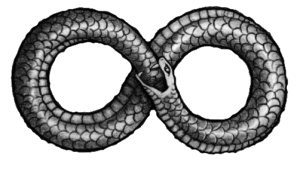

Our name Auros comes from the ancient symbol of the ouroboros. It’s a picture of a
snake eating its own tail. To us, it speaks of sustainability and a circular economy.
Oros in Latin means tail. And the tail end of our society is rubbish. Population
increase, consumerism and consumption means that we’re producing more rubbish
than even before.

And consequently, we’re throwing away more rubbish than ever before.
Rubbish in landfill decomposes over hundreds of years and releases dangerous
toxins such as methane, carbon dioxide and nitrious oxide.
These gasses directly contribute to the greenhouse effect which warms the planet. In
New Zealand, 14% of total carbon dioxide emissions and 4% of methane emissions
come from landfill. This equates to roughly 18% of New Zealands total emissions.
In Kapiti, we put our rubbish on the kerbside, it’s picked up and taken to a transfer
station before a landfill site. We pay $6.25 per week for a 240l bin or $5.40 for a
rubbish bag at the landfill site.
We’d like to see Kapiti disposing of their rubbish in a sustainable manner. Instead of
taking the rubbish to the landfill site – it’s taken to our Auros facility.
At our facility, we incinerate rubbish BUT instead of allowing the gas to be released
into the atmosphere, we collect it and dispose of the gasses the same way nature
does.
Essentially, this is photosynthesis on steroids.
Plants outside today absorb Carbon Dioxide and with sunlight, turn it to oxygen.
One of our co-founders has been researching algae for 5 years and wrote his
master’s thesis it.
What he found is that Algae can process not only Carbon Dioxide, but Methane and
other trace gasses as well. Using a cocktail of plant species, all emissions produced
by landfill could be neutralised.
Waste disposal is an emergent market with heaps of activity. Waste to energy plants
are burning rubbish, steam spins turbines that generate electricity, capturing the heat
to heat cities, or burning plastics to turn into oil. However, all of these have an
exhaust at their plant.
Our point of difference – we have no exhaust so no emissions go into the
atmosphere.
How it works:
You buy our Auros rubbish bag for $10. Don’t do anything differently with it, we’ll
collect it. And we’ll make sure the waste is disposed of in an environmentally friendly
way with zero emissions.
Support us to support the environment. Stay in touch to find out more about our
launch or download our investor pack.

Sustainable Waste Management Solutions
Eliminating emissions from landfill